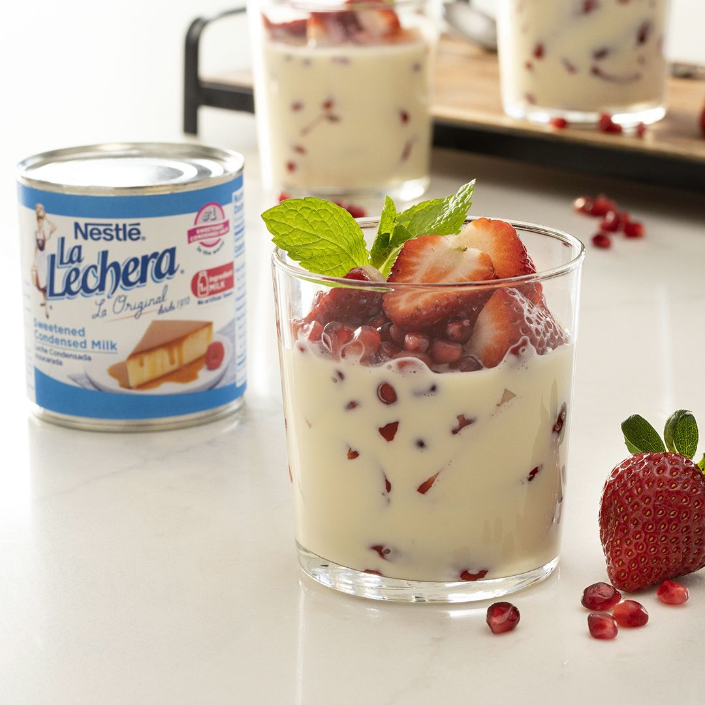

FRESAS CON CREMA
Ingredientes
1 taza de crema agria
1/3 de taza de leche evaporada
1/3 de taza de Media Crema NESTLÉ®️
1 taza de Leche Condensada Azucarada NESTLÉ®️ LA LECHERA®️
1 1/2 cucharaditas de extracto de vainilla
1/8 de cucharadita de sal
16 onzas de fresas frescas, peladas y cortadas en cuartos
1 taza de semillas de granada (de aproximadamente la mitad de una granada)
Preparación
Paso 1
Coloca la crema agria, la leche evaporada, la Media Crema, la leche
condensada azucarada, el extracto de vainilla y la sal en un tazón grande;
revuelve para combinar.
Paso 2
Divide la mezcla de crema de manera uniforme entre cuatro tazas o
tazones (alrededor de ¾ de taza por tazón); divide la fruta en partes
iguales entre los cuatro tazones. Sirve de inmediato.
